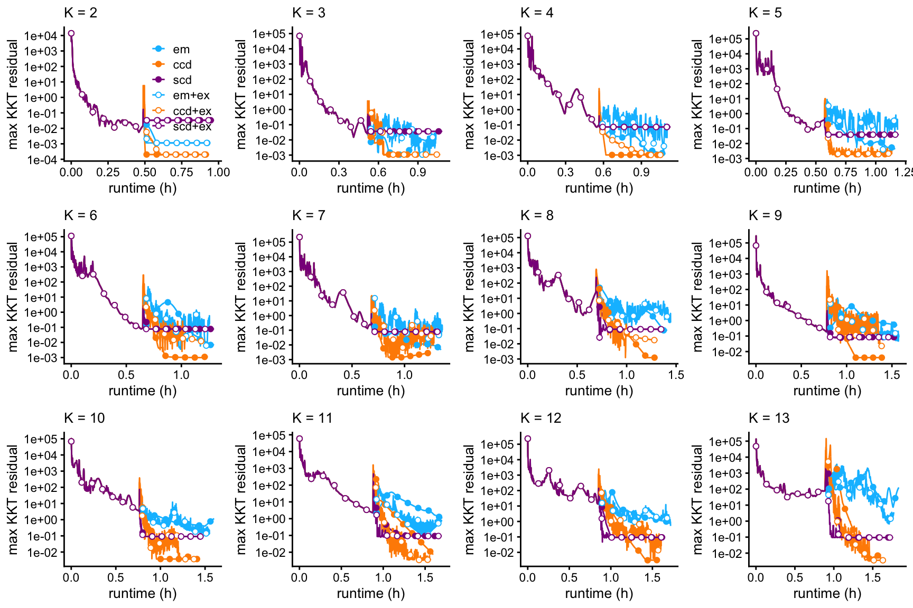

Assess Poisson NMF fits in droplet data
Peter Carbonetto
Last updated: 2022-02-06
Checks: 7 0
Knit directory: single-cell-topics/analysis/
This reproducible R Markdown analysis was created with workflowr (version 1.7.0). The Checks tab describes the reproducibility checks that were applied when the results were created. The Past versions tab lists the development history.
Great! Since the R Markdown file has been committed to the Git repository, you know the exact version of the code that produced these results.
Great job! The global environment was empty. Objects defined in the global environment can affect the analysis in your R Markdown file in unknown ways. For reproduciblity it’s best to always run the code in an empty environment.
The command set.seed(1) was run prior to running the code in the R Markdown file. Setting a seed ensures that any results that rely on randomness, e.g. subsampling or permutations, are reproducible.
Great job! Recording the operating system, R version, and package versions is critical for reproducibility.
Nice! There were no cached chunks for this analysis, so you can be confident that you successfully produced the results during this run.
Great job! Using relative paths to the files within your workflowr project makes it easier to run your code on other machines.
Great! You are using Git for version control. Tracking code development and connecting the code version to the results is critical for reproducibility.
The results in this page were generated with repository version a4756b5. See the Past versions tab to see a history of the changes made to the R Markdown and HTML files.
Note that you need to be careful to ensure that all relevant files for the analysis have been committed to Git prior to generating the results (you can use wflow_publish or wflow_git_commit). workflowr only checks the R Markdown file, but you know if there are other scripts or data files that it depends on. Below is the status of the Git repository when the results were generated:
Ignored files:
Ignored: data/droplet.RData
Ignored: data/pbmc_68k.RData
Ignored: data/pbmc_purified.RData
Ignored: data/pulseseq.RData
Ignored: output/droplet/diff-count-droplet.RData
Ignored: output/droplet/fits-droplet.RData
Ignored: output/droplet/rds/
Ignored: output/pbmc-purified/fits-pbmc-purified.RData
Ignored: output/pbmc-purified/rds/
Ignored: output/pulseseq/diff-count-pulseseq.RData
Ignored: output/pulseseq/fits-pulseseq.RData
Ignored: output/pulseseq/rds/
Ignored: output/sims/
Untracked files:
Untracked: analysis/de_analysis_detailed_look_cache/
Untracked: analysis/de_analysis_detailed_look_more_cache/
Untracked: analysis/structure-plot-pulseseq-merged.png
Untracked: plots/
Unstaged changes:
Modified: code/functions_for_assessing_fits.R
Note that any generated files, e.g. HTML, png, CSS, etc., are not included in this status report because it is ok for generated content to have uncommitted changes.
These are the previous versions of the repository in which changes were made to the R Markdown (analysis/assess_fits_droplet.Rmd) and HTML (docs/assess_fits_droplet.html) files. If you’ve configured a remote Git repository (see ?wflow_git_remote), click on the hyperlinks in the table below to view the files as they were in that past version.
| File | Version | Author | Date | Message |
|---|---|---|---|---|
| Rmd | a4756b5 | Peter Carbonetto | 2022-02-06 | workflowr::wflow_publish(“assess_fits_droplet.Rmd”, verbose = TRUE) |
| html | e741d0f | Peter Carbonetto | 2020-11-14 | Adjusted axes in progress plots. |
| Rmd | 9419a6c | Peter Carbonetto | 2020-11-14 | A couple small revisions to the progress plots. |
| html | 15a4c62 | Peter Carbonetto | 2020-11-14 | Another adjustment to the progress plots in assess_fits_droplet. |
| html | c8ab215 | Peter Carbonetto | 2020-11-14 | Adjusted progress plots in assess_fits_droplet. |
| html | 89f12a8 | Peter Carbonetto | 2020-11-14 | Small edit to text in assess_fits_droplet. |
| Rmd | 86fece9 | Peter Carbonetto | 2020-11-14 | workflowr::wflow_publish(“assess_fits_droplet.Rmd”) |
| html | 6703ed1 | Peter Carbonetto | 2020-11-14 | I no longer remove first 1,000 iterations in progress plots in |
| Rmd | 395683b | Peter Carbonetto | 2020-11-13 | Minor edits to text in assess_fits_droplet. |
| html | 8a7dd01 | Peter Carbonetto | 2020-11-13 | Small fix to assess_fits_droplet analysis. |
| Rmd | 57aa99d | Peter Carbonetto | 2020-11-13 | workflowr::wflow_publish(“assess_fits_droplet.Rmd”) |
| html | e66e2c5 | Peter Carbonetto | 2020-11-13 | Added code to generate figures for paper in assess_fits_droplet analysis. |
| Rmd | 71ddca1 | Peter Carbonetto | 2020-11-13 | workflowr::wflow_publish(“assess_fits_droplet.Rmd”) |
| Rmd | 7574166 | Peter Carbonetto | 2020-11-11 | A couple small edits. |
| html | e15be6f | Peter Carbonetto | 2020-10-26 | Added k >= 15 fits to assess_fits_droplet. |
| Rmd | e178bed | Peter Carbonetto | 2020-10-26 | workflowr::wflow_publish(“assess_fits_droplet.Rmd”) |
| html | f970ef9 | Peter Carbonetto | 2020-08-31 | Re-ran assess_fits_droplet analysis with fix to timings reported in X |
| html | cd32976 | Peter Carbonetto | 2020-08-09 | Build site. |
| Rmd | 1580b4c | Peter Carbonetto | 2020-08-09 | wflow_publish(“assess_fits_droplet.Rmd”) |
| html | bc18c04 | Peter Carbonetto | 2020-08-09 | Made several improvements to assess_fits_droplet. |
| Rmd | 116c9fb | Peter Carbonetto | 2020-08-09 | wflow_publish(“assess_fits_droplet.Rmd”) |
| html | b8a783d | Peter Carbonetto | 2020-08-09 | First build of assess_fits_droplet analysis. |
| Rmd | 1ef2ac6 | Peter Carbonetto | 2020-08-09 | wflow_publish(“assess_fits_droplet.Rmd”) |
| Rmd | 68d8a4a | Peter Carbonetto | 2020-08-09 | Added comments and made minor adjustments to create_progress_plots. |
| Rmd | 94c632a | Peter Carbonetto | 2020-08-09 | Working on assess_fits_droplet analysis. |
Here we compare the quality of the fits obtained from the different updates (EM, CCD, SCD, with and without extrapolation), and with different \(K\).
Load the packages used in the analysis below, as well as some additional functions for creating the plots.
library(fastTopics)
library(ggplot2)
library(cowplot)
source("../code/functions_for_assessing_fits.R")Load the results of running fit_poisson_nmf on the droplet data, with different algorithms, and for various settings of \(K\) (the number of topics, or equivalently the dimension of the matrix factorization).
load("../output/droplet/fits-droplet.RData")This plot shows the improvement in the log-likelihood as the rank, \(K\), is increased. The log-likelihoods are shown relative to the log-likelihood at \(K = 2\).
plot_loglik_vs_rank(fits) +
theme_cowplot(font_size = 12)
Oddly, the likelihood did not improve from 4 to 5, and same from 8 to 9. Otherwise, the likelihood improved with larger rank, \(K\).
The next set of plots shows the improvement in the fit over time, for \(K\) from 2 to 13, and for each of the three updates (EM, CCD, SCD) with and without extrapolation. The quality of the fit is measured by the log-likelihood relative to the best log-likelihood that was identified among all methods compared.
create_progress_plots(dat,fits,"loglik")
| Version | Author | Date |
|---|---|---|
| e741d0f | Peter Carbonetto | 2020-11-14 |
| 15a4c62 | Peter Carbonetto | 2020-11-14 |
| c8ab215 | Peter Carbonetto | 2020-11-14 |
| 6703ed1 | Peter Carbonetto | 2020-11-14 |
| e66e2c5 | Peter Carbonetto | 2020-11-13 |
| f970ef9 | Peter Carbonetto | 2020-08-31 |
| bc18c04 | Peter Carbonetto | 2020-08-09 |
| b8a783d | Peter Carbonetto | 2020-08-09 |
The last set of plots shows the evolution of the KKT residuals over time; the KKT residuals should vanish near a stationary point of the log-likelihood, so looking at the largest KKT residual can be used to assess how close we are to a solution. Note that, unlike the log-likelihood, the KKT residuals are not expected to decrease monotonically over time.
create_progress_plots(dat,fits,"res")
| Version | Author | Date |
|---|---|---|
| e741d0f | Peter Carbonetto | 2020-11-14 |
| 15a4c62 | Peter Carbonetto | 2020-11-14 |
| c8ab215 | Peter Carbonetto | 2020-11-14 |
| 6703ed1 | Peter Carbonetto | 2020-11-14 |
| e66e2c5 | Peter Carbonetto | 2020-11-13 |
| f970ef9 | Peter Carbonetto | 2020-08-31 |
| bc18c04 | Peter Carbonetto | 2020-08-09 |
| b8a783d | Peter Carbonetto | 2020-08-09 |
sessionInfo()
# R version 3.6.2 (2019-12-12)
# Platform: x86_64-apple-darwin15.6.0 (64-bit)
# Running under: macOS Catalina 10.15.7
#
# Matrix products: default
# BLAS: /Library/Frameworks/R.framework/Versions/3.6/Resources/lib/libRblas.0.dylib
# LAPACK: /Library/Frameworks/R.framework/Versions/3.6/Resources/lib/libRlapack.dylib
#
# locale:
# [1] en_US.UTF-8/en_US.UTF-8/en_US.UTF-8/C/en_US.UTF-8/en_US.UTF-8
#
# attached base packages:
# [1] stats graphics grDevices utils datasets methods base
#
# other attached packages:
# [1] cowplot_1.0.0 ggplot2_3.3.5 fastTopics_0.6-98
#
# loaded via a namespace (and not attached):
# [1] httr_1.4.2 tidyr_1.1.3 jsonlite_1.7.2 viridisLite_0.3.0
# [5] RcppParallel_4.4.2 assertthat_0.2.1 highr_0.8 mixsqp_0.3-46
# [9] yaml_2.2.0 progress_1.2.2 ggrepel_0.9.1 pillar_1.6.2
# [13] backports_1.1.5 lattice_0.20-38 quantreg_5.54 glue_1.4.2
# [17] quadprog_1.5-8 digest_0.6.23 promises_1.1.0 colorspace_1.4-1
# [21] htmltools_0.4.0 httpuv_1.5.2 Matrix_1.2-18 pkgconfig_2.0.3
# [25] invgamma_1.1 SparseM_1.78 purrr_0.3.4 scales_1.1.0
# [29] whisker_0.4 later_1.0.0 Rtsne_0.15 MatrixModels_0.4-1
# [33] git2r_0.26.1 tibble_3.1.3 farver_2.0.1 generics_0.0.2
# [37] ellipsis_0.3.2 withr_2.4.2 ashr_2.2-51 pbapply_1.5-1
# [41] lazyeval_0.2.2 magrittr_2.0.1 crayon_1.4.1 mcmc_0.9-6
# [45] evaluate_0.14 fs_1.3.1 fansi_0.4.0 MASS_7.3-51.4
# [49] truncnorm_1.0-8 tools_3.6.2 data.table_1.12.8 prettyunits_1.1.1
# [53] hms_1.1.0 lifecycle_1.0.0 stringr_1.4.0 MCMCpack_1.4-5
# [57] plotly_4.9.2 munsell_0.5.0 irlba_2.3.3 compiler_3.6.2
# [61] jquerylib_0.1.4 rlang_0.4.11 grid_3.6.2 htmlwidgets_1.5.1
# [65] labeling_0.3 rmarkdown_2.11 gtable_0.3.0 DBI_1.1.0
# [69] R6_2.4.1 knitr_1.37 dplyr_1.0.7 uwot_0.1.10
# [73] utf8_1.1.4 workflowr_1.7.0 rprojroot_1.3-2 stringi_1.4.3
# [77] parallel_3.6.2 SQUAREM_2017.10-1 Rcpp_1.0.7 vctrs_0.3.8
# [81] tidyselect_1.1.1 xfun_0.29 coda_0.19-3